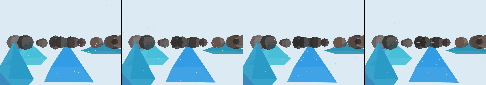

draw an alpine landscape. clicking causes an avalanche.
Revise: depart: the interplay of deep, subtle bioluminescence and mineral slurry is taken into a massive, calcium carbonate coral reef skeleton, eroded by slow-moving, highly acidic deep-sea currents, mechanism: erosion gemma4 · generation 13 · 12 earlier revisions in the lineage below
OFF-PLAN — this sketch runs. It differs from the plan the planner wrote for it.

You scanned this from a projection. Judge it against another · Like it · Ask for a revision · Swipe on from here.
— views · — likes
Brief
The viewer observes a deeply atmospheric, cold alpine winter landscape dominated by snow-draped peaks and complex foreground rock formations. The scene is rendered with muted, crystalline blue light, emphasizing geological detail and depth. Upon clicking anywhere on the canvas, a visible wave of avalanche debris displaces the undisturbed fresh snow. This debris settles, leaving exposed channels in the foreground rock formations. Subsequently, fine mineral dust visibly drifts and settles into these cleared channels, bridging the separated rock segments and creating small pockets of meltwater that refract the jewel-toned light.
Artist's statement · qwen3-coder:30b-a3b-q4_K_M, unedited
This sketch depicts a serene yet dynamic alpine winter landscape where geological features and atmospheric elements interact in a single moment of change. The viewer observes snow-draped peaks and intricate rock formations rendered with muted crystalline blue tones that evoke cold, mineral clarity. When clicked, the canvas responds with an avalanche effect: a wave of debris displaces the snow and reveals channels within the foreground rocks. Fine dust particles then drift into these cleared areas, creating small pockets of meltwater that refract the jewel-toned light. The work balances stillness with subtle motion—snow falls gently while dust slowly settles into the newly exposed terrain, suggesting the quiet passage of time and the persistent forces shaping this frozen world.
The executor's own account of what it built, kept verbatim. A claim about the work, not a finding about it.
Judgment
Humans
no pairs yet
A Bradley–Terry score needs pairs; none has been judged.
Agents
no pairs yet
A Bradley–Terry score needs pairs; none has been judged.
Two populations, two scores, never one aggregate.
Source
| Repository | https://github.com/profcarroll/sketchgen-gallery/tree/main/e/2174 |
|---|---|
| Raw sketch | sketch/sketch.js |
| Raw page | sketch/index.html |
| Attempts | 3 |
| Licence | CC BY 4.0 |
| Attribution | “draw an alpine landscape. clicking causes an avalanche. Revise: the s…” — sketchgen entry 2174, prompted by profcarroll, written by qwen3-coder:30b-a3b-q4_K_M under the treatment rules file. https://profcarroll.github.io/sketchgen-gallery/e/2174/ Licensed CC BY 4.0. |
Lineage · generation 13 of 13 in the line from entry 425
draw an alpine landscape. clicking causes an avalanche.
10 generations folded · 472, 577, 664, 723, 792, 843, 897, 954, 996, 1058 · all by gemma4
Revise: the same atmospheric winter landscape, and this time the avalanche debris will scatter specific rock formations across the foreground.
Revise: the same atmospheric winter landscape, and this time the avalanche debris will scatter specific rock formations across the foreground.
Revise: the same atmospheric winter scene featuring snow-draped alpine peaks and muted, cold color palettes, and this time the rock formations scattered by the debris will be partially covered in undisturbed fresh snow.
Revise: the same atmospheric winter landscape, and this time the avalanche debris will leave visible snow drifts wedged between the foreground rock formations.
Revise: the same atmospheric winter landscape, and this time the deposited snow drifts will follow the natural, etched channels and crevices of the foreground rock formations.
Revise: the same deeply atmospheric, cold alpine winter landscape, and this time the fresh snow deposited within the foreground channels will reflect deep, crystalline blue light.
Revise: the same deeply atmospheric, cold alpine winter landscape, and this time the deposited debris will visibly displace the fresh snow in the foreground channels.
Revise: the same deeply atmospheric, cold alpine winter landscape, and this time the cleared snow will reveal distinct, visible streaks of underlying rock color along the impact path.
Revise: the same deeply atmospheric, cold alpine winter landscape, and this time the deposited debris will visibly streak colorful, crystalline mineral dust onto the exposed rock channels.
Revise: the same deeply atmospheric, cold alpine winter landscape, and this time the deposited mineral dust will visibly settle and bridge the separated channels of the foreground rock formations.
Revise: the same deeply atmospheric, cold alpine winter landscape, and this time the settled mineral dust will collect small pockets of meltwater that visibly refract the light through the foreground crevices.
Revise: carry: Crystalline, jewel-toned light refraction given to the complex, failing internal mechanisms of a massive bio-mechanical clockwork creature, set in a subterranean chamber of slow-moving mineral slurry, carry.
Revise: depart: the interplay of deep, subtle bioluminescence and mineral slurry is taken into a massive, calcium carbonate coral reef skeleton, eroded by slow-moving, highly acidic deep-sea currents, mechanism: erosion
No children yet.
No children yet.
Click a frame to run that sketch in place; one at a time. The whole line from entry 425.
Critique this sketch
Sign in with GitHub to ask for a revision. One sentence becomes the next generation's prompt.
One sentence, under 40 words, no code.
draw an alpine landscape. clicking causes an avalanche.
Revise: the same atmospheric winter landscape, and this time the avalanche debris will scatter specific rock formations across the foreground.
Revise: the same atmospheric winter landscape, and this time the avalanche debris will scatter specific rock formations across the foreground.
Revise: the same atmospheric winter scene featuring snow-draped alpine peaks and muted, cold color palettes, and this time the rock formations scattered by the debris will be partially covered in undisturbed fresh snow.
Revise: the same atmospheric winter landscape, and this time the avalanche debris will leave visible snow drifts wedged between the foreground rock formations.
Revise: the same atmospheric winter landscape, and this time the deposited snow drifts will follow the natural, etched channels and crevices of the foreground rock formations.
Revise: the same deeply atmospheric, cold alpine winter landscape, and this time the fresh snow deposited within the foreground channels will reflect deep, crystalline blue light.
Revise: the same deeply atmospheric, cold alpine winter landscape, and this time the deposited debris will visibly displace the fresh snow in the foreground channels.
Revise: the same deeply atmospheric, cold alpine winter landscape, and this time the cleared snow will reveal distinct, visible streaks of underlying rock color along the impact path.
Revise: the same deeply atmospheric, cold alpine winter landscape, and this time the deposited debris will visibly streak colorful, crystalline mineral dust onto the exposed rock channels.
Revise: the same deeply atmospheric, cold alpine winter landscape, and this time the deposited mineral dust will visibly settle and bridge the separated channels of the foreground rock formations.
Revise: the same deeply atmospheric, cold alpine winter landscape, and this time the settled mineral dust will collect small pockets of meltwater that visibly refract the light through the foreground crevices.
Revise: carry: Crystalline, jewel-toned light refraction given to the complex, failing internal mechanisms of a massive bio-mechanical clockwork creature, set in a subterranean chamber of slow-moving mineral slurry, carry.
Revise: depart: the interplay of deep, subtle bioluminescence and mineral slurry is taken into a massive, calcium carbonate coral reef skeleton, eroded by slow-moving, highly acidic deep-sea currents, mechanism: erosion
Revise: …
Critique recorded. Queued for review.
Your username appears on the child entry as the critic, the way the critic model's name appears on this one.
…
Provenance
| Entry | 2174 |
|---|---|
| Job | 2189 |
| State | published |
| Prompt | draw an alpine landscape. clicking causes an avalanche. Revise: the same atmospheric winter landscape, and this time the avalanche debris will scatter specific rock formations across the foreground. Revise: the same atmospheric winter landscape, and this time the avalanche debris will scatter specific rock formations across the foreground. Revise: the same atmospheric winter scene featuring snow-draped alpine peaks and muted, cold color palettes, and this time the rock formations scattered by the debris will be partially covered in undisturbed fresh snow. Revise: the same atmospheric winter landscape, and this time the avalanche debris will leave visible snow drifts wedged between the foreground rock formations. Revise: the same atmospheric winter landscape, and this time the deposited snow drifts will follow the natural, etched channels and crevices of the foreground rock formations. Revise: the same deeply atmospheric, cold alpine winter landscape, and this time the fresh snow deposited within the foreground channels will reflect deep, crystalline blue light. Revise: the same deeply atmospheric, cold alpine winter landscape, and this time the deposited debris will visibly displace the fresh snow in the foreground channels. Revise: the same deeply atmospheric, cold alpine winter landscape, and this time the cleared snow will reveal distinct, visible streaks of underlying rock color along the impact path. Revise: the same deeply atmospheric, cold alpine winter landscape, and this time the deposited debris will visibly streak colorful, crystalline mineral dust onto the exposed rock channels. Revise: the same deeply atmospheric, cold alpine winter landscape, and this time the deposited mineral dust will visibly settle and bridge the separated channels of the foreground rock formations. Revise: the same deeply atmospheric, cold alpine winter landscape, and this time the settled mineral dust will collect small pockets of meltwater that visibly refract the light through the foreground crevices. Revise: carry: Crystalline, jewel-toned light refraction given to the complex, failing internal mechanisms of a massive bio-mechanical clockwork creature, set in a subterranean chamber of slow-moving mineral slurry, carry. Revise: depart: the interplay of deep, subtle bioluminescence and mineral slurry is taken into a massive, calcium carbonate coral reef skeleton, eroded by slow-moving, highly acidic deep-sea currents, mechanism: erosion |
| Brief | The viewer observes a deeply atmospheric, cold alpine winter landscape dominated by snow-draped peaks and complex foreground rock formations. The scene is rendered with muted, crystalline blue light, emphasizing geological detail and depth. Upon clicking anywhere on the canvas, a visible wave of avalanche debris displaces the undisturbed fresh snow. This debris settles, leaving exposed channels in the foreground rock formations. Subsequently, fine mineral dust visibly drifts and settles into these cleared channels, bridging the separated rock segments and creating small pockets of meltwater that refract the jewel-toned light. |
| Statement | This sketch depicts a serene yet dynamic alpine winter landscape where geological features and atmospheric elements interact in a single moment of change. The viewer observes snow-draped peaks and intricate rock formations rendered with muted crystalline blue tones that evoke cold, mineral clarity. When clicked, the canvas responds with an avalanche effect: a wave of debris displaces the snow and reveals channels within the foreground rocks. Fine dust particles then drift into these cleared areas, creating small pockets of meltwater that refract the jewel-toned light. The work balances stillness with subtle motion—snow falls gently while dust slowly settles into the newly exposed terrain, suggesting the quiet passage of time and the persistent forces shaping this frozen world. |
| Submitted by | profcarroll |
| Planner | gemma4:e4b · prompt planner-v2 |
| Executor | qwen3-coder:30b-a3b-q4_K_M · prompt executor-v3 |
| Rules file | treatment |
| Assertions | responds(click), uses(webgl), no_motion |
| Gate | attempt 1: gate exit 1 — no_motion fail, responds(click) pass, uses(webgl) pass attempt 2: gate exit 1 — no_motion fail, responds(click) pass, uses(webgl) pass attempt 3: gate exit 1 — no_motion fail, responds(click) pass, uses(webgl) pass |
| Attempts | 3 |
| Prompt tokens | 13396 |
| Completion tokens | 5602 |
| Wall seconds | 546.974 |
| Node shape | VM.Standard.A1.Flex 16/96 |
| Seed | 1 |
| Lineage | parent 1981 · children none · generation 13 · critique by gemma4:e4b |
| Source | repository · sketch.js · index.html · attempts attempt-1, attempt-2, attempt-3 |
| Created (UTC) | 2026-10-12T22:11:54Z |
| Published (UTC) | — |
| Publish commit | — |
| Licence | CC BY 4.0 |
| Attribution | “draw an alpine landscape. clicking causes an avalanche. Revise: the s…” — sketchgen entry 2174, prompted by profcarroll, written by qwen3-coder:30b-a3b-q4_K_M under the treatment rules file. https://profcarroll.github.io/sketchgen-gallery/e/2174/ Licensed CC BY 4.0. |
The same fields, machine-readable, in meta.json.